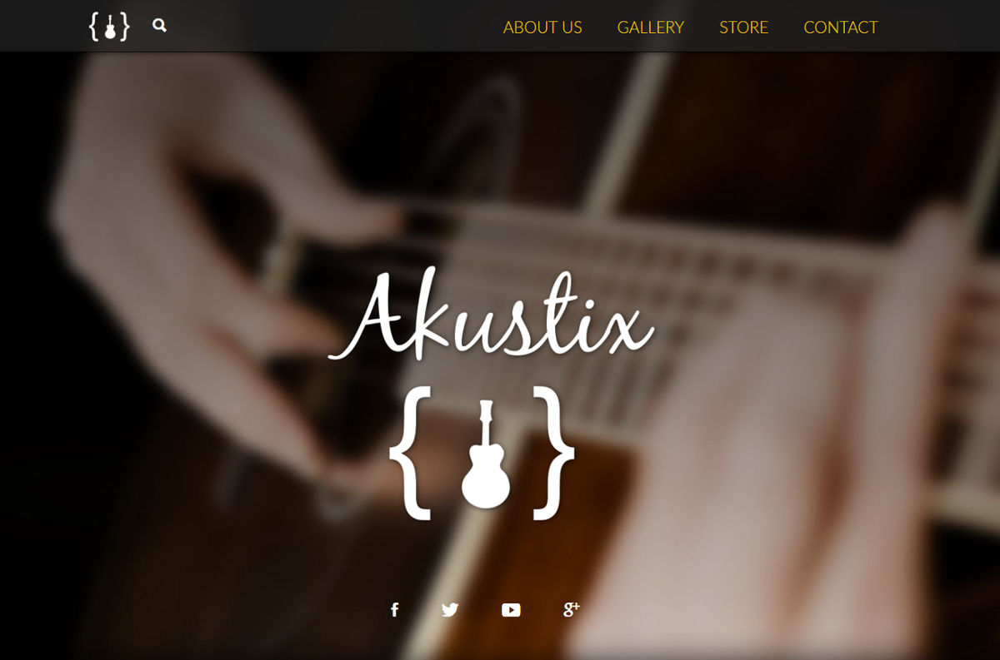

<div class="portfolio-row row">
            <section class="container portfolio" id="portfolio">
                <div class="row">
                    <h2>Portfolio</h2>
                </div>

                <div class="row">
                    <nav>
                        <h6><span class="sr-only">Portfolio navigation</span></h6>
                        <ul class="nav nav-pills portfolio-nav filter-options">
                            <li class="active-tab" data-filter="all">All</li>
                            <li data-filter="1">Sites</li>
                            <li data-filter="2">Code</li>
                            <li data-filter="3">Graphics</li>
                        </ul>
                    </nav>
                </div>

                <div class="row">
                    <div class="showcase-container clearfix" id="showcase-container">

                        <section class="col-sm-6 filtr-item showcase-item" data-category="1, 2">
                            
                            <div class="item-desc">
                                <h4>Filterizr</h4>
                                <p>A jQuery plugin for filtering, sorting,shuffling and searching responsive galleries with custom CSS effects.</p>
                                <a class="button preview-btn" href="filterizr/index.html" target="_blank">Visit</a>
                                <a class="button github-btn" href="https://github.com/giotiskl/Filterizr" target="_blank">GitHub</a>
                            </div>
                        </section>

                        <section class="col-sm-6 filtr-item showcase-item" data-category="1">
                            
                            <div class="item-desc">
                                <h4>Photocraft</h4>
                                <p>Photocraft is an elegant, free Bootstrap photography-portfolio theme. Licensed under MIT.</p>
                                <a class="button preview-btn" href="showcase/photocraft/index.html" target="_blank">Visit</a>
                                <a class="button github-btn" href="https://github.com/giotiskl/Photocraft" target="_blank">GitHub</a>
                            </div>
                        </section>

                        <section class="col-sm-6 filtr-item showcase-item" data-category="1">
                            
                            <div class="item-desc">
                                <h4>Xtreme Travels</h4>
                                <p>A single-pager developed for a fictitious travel agency specializing in organizing trips to wild destinations.</p>
                                <a class="button" href="showcase/xtremetravels/index.html" target="_blank">Visit</a>
                            </div>
                        </section>

                        <section class="col-sm-6 filtr-item showcase-item" data-category="1">
                            
                            <div class="item-desc">
                                <h4>Akustix</h4>
                                <p>A free Bootstrap theme for guitar manufacturers and retailers. Licensed under MIT.</p>
                                <a class="button preview-btn" href="showcase/akustix/index.html" target="_blank">Visit</a>
                                <a class="button github-btn" href="https://github.com/giotiskl/Akustix" target="_blank">GitHub</a>
                            </div>
                        </section>
                    </div>
                </div>


            </section>
        </div>
